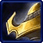
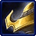

Колосс
| Колосс | |
 |
|
| Информация о юните | |
| Тип: | Наземная боевая единица |
| Описание: | Поддержка дальнего боя |
| Построен из: | Врата |
| Стоимость: |  125 125  50 50  30 30  2 2 |
| Горячие клавиши: | S |
| Нейтронные разрушители | |
| Цели: | Земля/Воздух |
| Урон | 13(+1) |
| DPS: | 9.7 (+0.75) |
| Перезарядка: | 1.34 |
| Ранг: | 6 |
| Статистика юнита | |
| Защита: |  80 80  80  1 (+1) 80  1 (+1) |
| Атрибуты: | Бронированный, механический |
| Зрение: | 10 |
| Скорость: | 4.13 |
| Размер груза: | 2 |
Сталкер — быстроходный наземный юнит протоссов дальнего боя, способный поражать как воздушные, так и наземные цели. Они деформируются у Врат и требуют Кибернетического Ядра. Название Сталкера указывает на его способность «бей-и-беги»: у них относительно высокая скорость передвижения, а после того, как в Сумеречном совете был исследован апгрейд «Мгновение», они могут наступать или отступать буквально молниеносно, обходя скалы и подпрыгивая. и вниз по скалам.
 Падение Айура продемонстрировало темным тамплиерам, что для победы над зергами требуется нечто большее, чем просто хитрость
и хитрость. Поэтому Темные тамплиеры разработали сталкера, военную машину, вдохновленную драгуном Кхалаи. В то время как
драгунами управляли искалеченные воины-протоссы, сталкером управляет теневая сущность воина темных тамплиеров, слившаяся с
металлическим телом. Неразимы, которые контролируют сталкеров, проходят этот процесс добровольно, упомянутый процесс включает
в себя ритуал с питанием от Бездны, который сливает их теневую сущность с машиной. Это дает им сверхъестественную степень
контроля над своими новыми телами. Процесс нельзя повернуть вспять.
Падение Айура продемонстрировало темным тамплиерам, что для победы над зергами требуется нечто большее, чем просто хитрость
и хитрость. Поэтому Темные тамплиеры разработали сталкера, военную машину, вдохновленную драгуном Кхалаи. В то время как
драгунами управляли искалеченные воины-протоссы, сталкером управляет теневая сущность воина темных тамплиеров, слившаяся с
металлическим телом. Неразимы, которые контролируют сталкеров, проходят этот процесс добровольно, упомянутый процесс включает
в себя ритуал с питанием от Бездны, который сливает их теневую сущность с машиной. Это дает им сверхъестественную степень
контроля над своими новыми телами. Процесс нельзя повернуть вспять.
Дизайн
Сталкеры примерно в два раза выше терранов в доспехах. Они черпают свою псионическую силу из связи своего хозяина Неразима с Пустотой и вооружены встроенными в панцирь разрушителями частиц, способными бороться как с наземными, так и с воздушными целями. Это оружие основано на силе обучения и технологий темных тамплиеров, чтобы стрелять смертоносными залпами энтропийной энергии Бездны. Каждый выстрел дестабилизирует материю на фундаментальном уровне и в конечном итоге разрывает ее на части, разрушая ее атомный состав. Разрушители частиц особенно эффективны против материалов с высокими индексами твердости, таких как хитиновый панцирь или тяжелая броня.
С момента своего появления на поле боя сталкерам приписывают множество фантастических способностей. Однако постоянно наблюдается только одно: способность мгновенно телепортироваться или «прыгать» из одного места в другое. Эта способность требует аугментации сталкера посредством реализации устройства, называемого вытеснителем Пустоты. При включении "прыжка" дает сталкерам возможность исчезать и мгновенно материализоваться в другом месте, предоставляя им беспрецедентную степень мобильности, идеально подходящую для быстрых ударов по врагу. Улучшенная мобильность позволяет сталкерам устраивать засады, ловить убегающих врагов и в целом вступать в бой на своих условиях, что делает сталкера идеальным воином для набегов на вражеские линии снабжения и телепортации до прибытия подкрепления. Однако каждое «моргание» порождает поток, который нагружает системы сталкера. Он должен пройти короткий период перезарядки, прежде чем начать новое перемещение. Когда Дэлаам забрал Копье Адуна, сталкеры были оснащены технологией реакторов, связанных с солнечным ядром, что позволяло быстро восстанавливать щит при использовании его способностей смещения.
После Конца Войны возвращение к художественному стилю Золотого века экспансии привело к тому, что фазовые кузнецы Кхалаи переделали несколько сталкеров в стиле древних тамплиеров. Это вызвало обиду у многих неразимов.